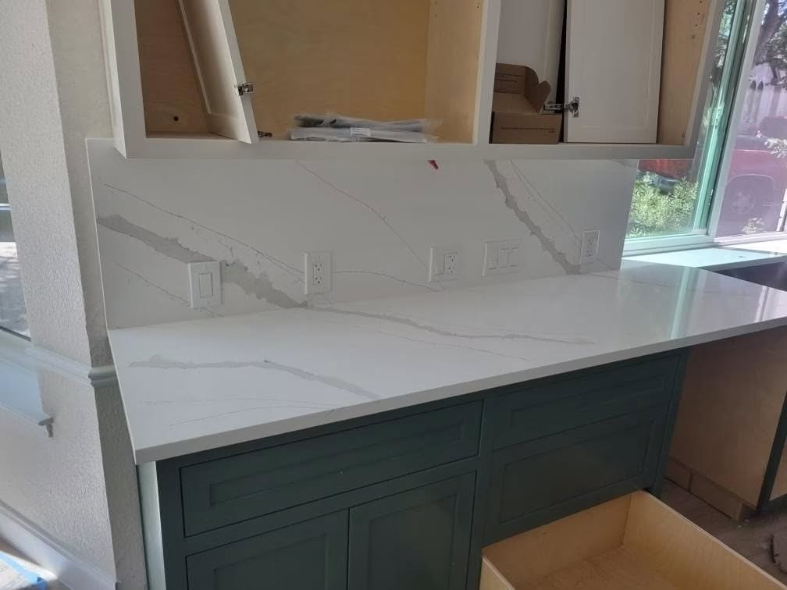
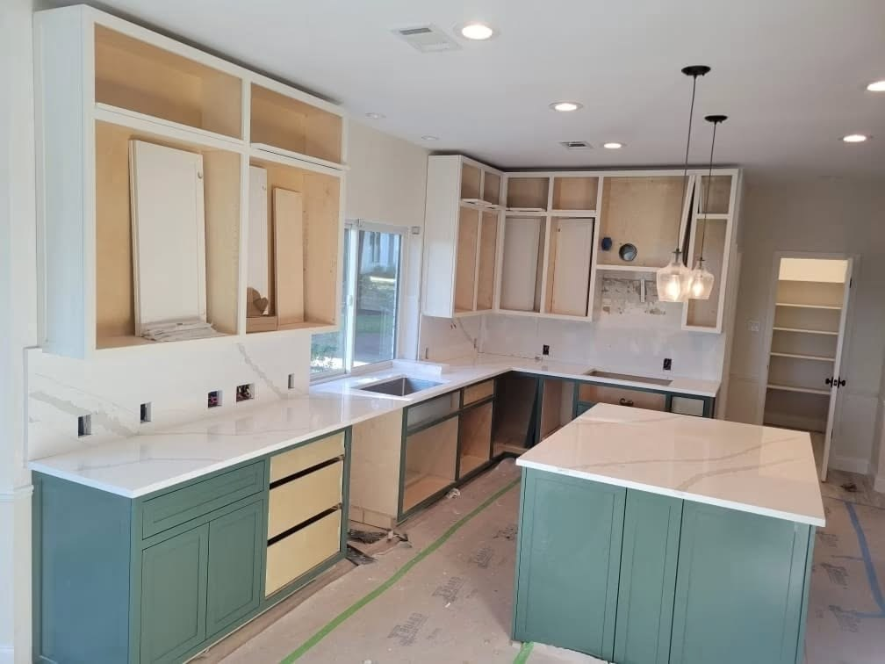
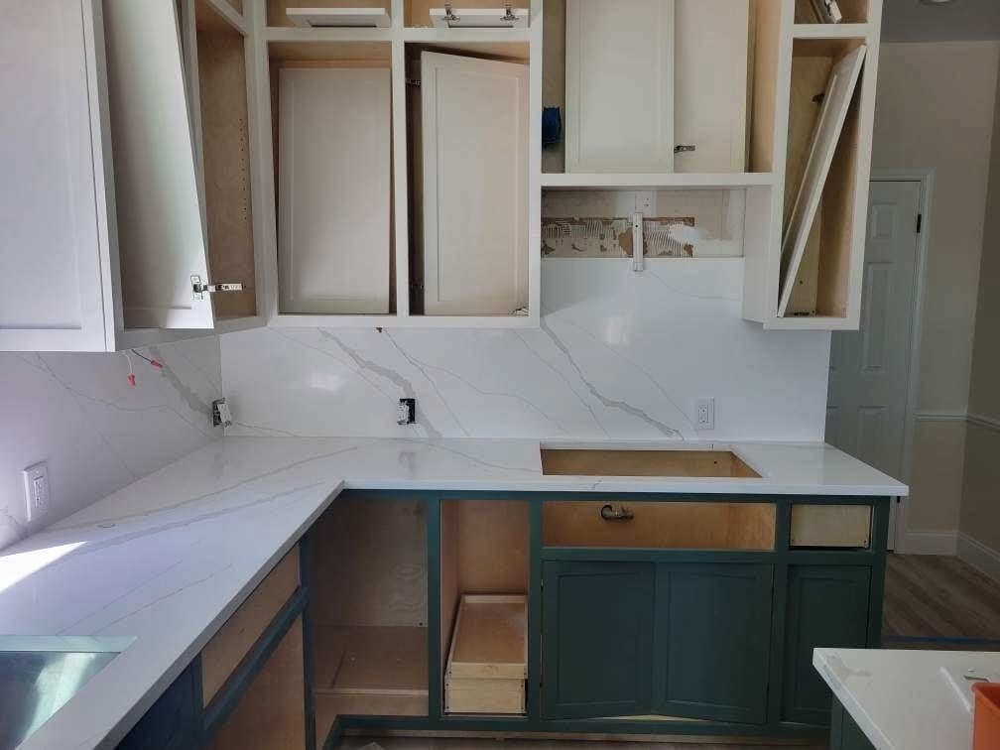
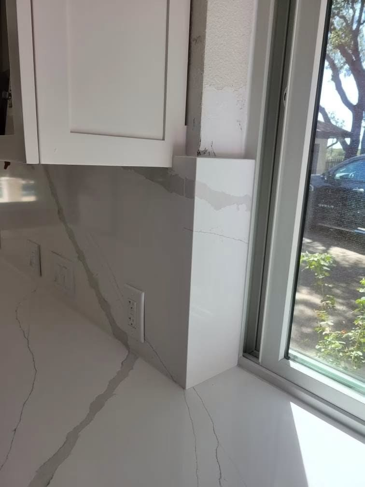
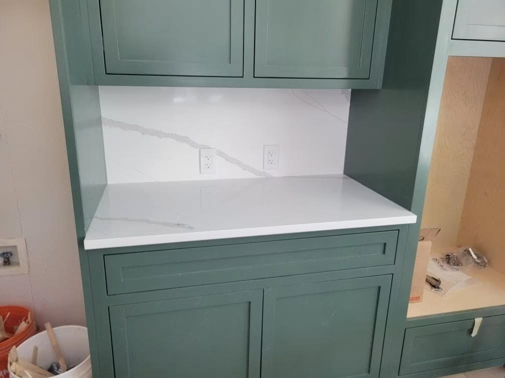
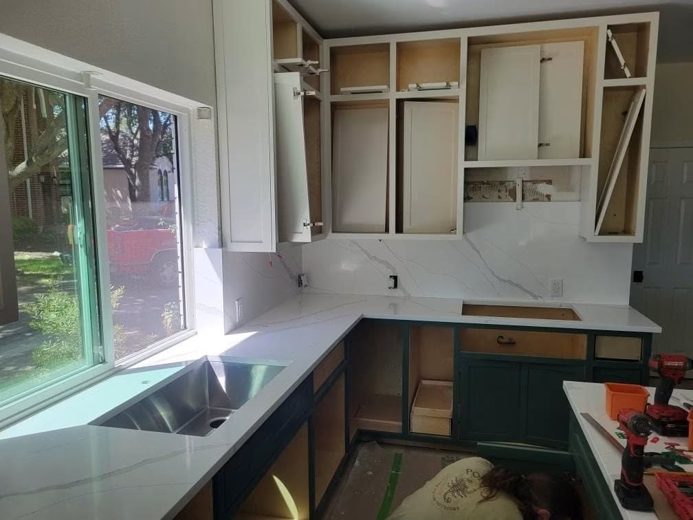
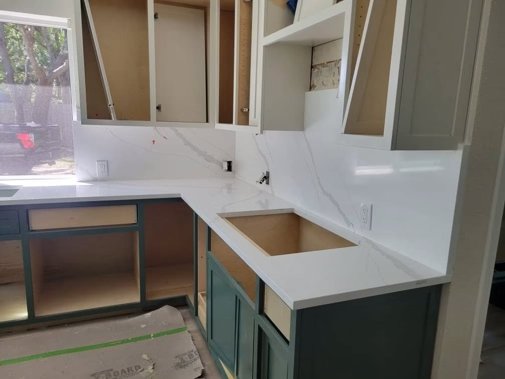

BASTROP, TX · COUNTERTOP FABRICATION & INSTALLATION
Beautiful Countertops.
Carefully Installed.
Bring your kitchen or bathroom vision to life with countertop fabrication and installation from a local team serving Bastrop, Texas.
✦
Countertop projects made personal
Bastrop, TX 78602
Made for your spaceA considered fit for your project
Practical guidanceHelp choosing the right surface
Local serviceProudly based in Bastrop, TX
One clear next stepTalk through your project

✳Made to complement
the heart of your home
the heart of your home
A LOCAL COUNTERTOP PARTNER
A surface that brings
the whole room together.
At TX Moon Countertops, the details matter. From the countertop surface to the finished edges and backsplash, every part contributes to how your space looks and works.
Whether you are updating a kitchen, refreshing a bathroom, or planning a new project, let's talk about the right solution for your home.
Tell us about your project →WHAT WE DO
Countertop services,
with the details in mind.
From the first conversation to the finished surface, get in touch to discuss the scope, material and next steps for your project.



Have another home improvement project in mind? Ask us about additional handyman services →
A LOOK AT OUR WORK
Real projects.
Real spaces.
A selection of countertop and kitchen installation photos shared by TX Moon Countertops.
Kitchen countertops ↗

Kitchen installation ↗ Stone & surface detail ↗
Custom kitchen layout ↗Project photographs supplied from the business's existing portfolio.
WHY WORK WITH TX MOON
Your home deserves
the right finishing touch.
Choosing a countertop is a big part of shaping a room. We want the process to feel clear, straightforward and centered on what works for your home.
Let's Talk About Your Project ↗01
Personal attention
A direct conversation about your space, needs and ideas.
02
Focused craftsmanship
Attention to the visible details that help complete a room.
03
More than a surface
Countertop work and additional home improvement help, based on your project.
04
Local to Bastrop
A local business ready to hear about your next project.
CUSTOMER EXPERIENCES
Good work should
speak for itself.
“
CUSTOMER REVIEWS
Your project could be featured here.
We have left this space ready for a genuine customer review. Add an approved testimonial or verified review before the website goes live.
START WITH A CONVERSATION
Ready to rethink
your countertops?
Tell us a little about your space and what you have in mind. Get in touch with TX Moon Countertops to discuss your project and request an estimate.